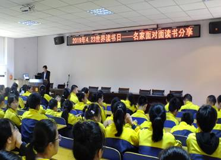

书香龙阳全民阅读
2019年4月23日上午九时，为迎接第23个世界读书日的到来，汉寿县直各机关、企事业各单位、学校以及社区群众近700人汇集在市民广场，举行隆重的“书香龙阳•全民阅读”暨首届“青年讲师团”招募启动仪式。

在第一活动现场——市民广场正中央的舞台上，由凤舞艺术教育学校学生表演的“峨嵋金顶”舞蹈拉开启动仪式帷幕……
在启动仪式上，领导们分别为“书香龙阳·全民阅读”启动提供赞助的九个爱心单位进行了颁奖，肯定他们近几年来为我县全民阅读工作所作出的贡献。
市民广场右侧，部分参加活动人员进行抖音网红留影墙狂拍区快乐嗨翻天互动与阅读心得分享区留言活动，人们互来互往，完全融入享受阅读带来的喜悦。